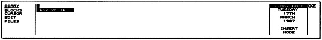
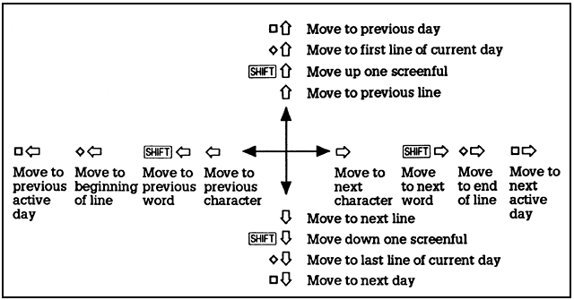

D. Only one
copy of the Diary can exist in the list of
SUSPENDED ACTIVITIES at any time.
D. Only one
copy of the Diary can exist in the list of
SUSPENDED ACTIVITIES at any time.The Diary
application can be entered from the Index menu or from any application
by typing D. Only one
copy of the Diary can exist in the list of
SUSPENDED ACTIVITIES at any time.
The Diary displays the Diary page for the current date, or the page previously edited if there is one.

Text can be typed into the diary in a free format, and can be edited using similar cursor-editing facilities as in PipeDream. Text automatically wraps to the next line when it reaches the right-hand margin, but note that unlike PipeDream the Diary does not reformat the remaining text on the page. This is to avoid altering the layout of any subsequent diary entries on the same page.
The ESC key can be used to escape from any menu option.
If you call the Calendar from within the Diary, you can use the cursor keys to select a new date. Pressing ESC then returns you to the Diary which will now display the page for the new date selected. (See Using the Calendar and Diary together, p. 69, for details.)
Similarly, if you call the Alarm popdown from the Diary, the date will initially be set to the current date in the Diary. When you return to the Diary, however, the same date will be displayed on the screen as before the Alarm was called.
When memory
is low, a warning is displayed in the DIARY
DATE window. You should
then free memory before proceeding by deleting obselete diary entries
with the  DEL
command.
DEL
command.
The commands on the BLOCKS menu allow you to perform a command on a block of text with a single operation A marked block can consist of a single line, can include several lines within one day, or can extend over several days, months, or even years.
To mark a block give the Mark Block command on a line to be selected, or at the top and bottom of an area to be selected. The marked block will be displayed highlighted on the screen.
ZMarks a line, or the first and last lines in a block of lines, prior to performing one of the block operations on the entire block.
QClears any marked block previously set up with the Mark Block command.
BCMakes a second copy of all the text within a marked block, putting the copy on the day indicated by the cursor position.
BMMoves a marked block of text from one position in the Diary to the position indicated by the cursor.
BDDeletes a marked block of text from the Diary, closing up the gap. Note that this text cannot be recovered - the command should be used with caution.
BLLists all or part of the diary to the screen, or to a printer.
The following options are displayed:
List on screen
Yes
List on printer
No
List only marked block
Yes
Pressing ENTER will list the entire Diary to the screen.
To list part of the Diary, mark the part you wish to list with the Mark Block command on the BLOCKS menu first.
When listing to the screen the Diary will pause at the end of each screenful with the PAGE WAIT display:
Press the space bar to continue the listing or ESC to exit.
The Search and Replace commands allow you to search for information anywhere in the diary and, if you wish, replace it throughout by different text.
Whenever the Diary is performing a time-consuming task, such as searching through a huge amount of information, or performing a large number of replacements, the cursor will disappear.
BSESearches for a specified string, and moves to the day containing the first occurrence. You can restrict the search to a marked block, and also print or list all the lines which match the search string.
The following options are displayed:
----------- STRING TO SEARCH FOR ----------
EQUATE UPPER AND LOWER CASE ...........
yes
SEARCH ONLY MARKED
BLOCK .............. No
PRODUCE LIST .......................... No
PRINT LIST ............................ No
For example, if you identify every expense claim in your diary with the prefix `EX:', you could search for or print out all the expenses by entering EX: as the string to search for.
Equate upper and lower case: by default the case is ignored so that specifying the will find The THE, etc. Change to No to find only strings that match the case of the specified string exactly.
Search only marked block: change to Yes to restrict the search to a marked block.
Produce list / Print list: change to Yes to produce a list of the found strings to the screen or printer respectively. This is useful for finding and printing all lines beginning with the same word, such as Meeting.
BNMMoves from the cursor position to the next occurrence of the string you are searching for.
BPMMoves from the cursor position to the previous occurrence of the string you are searching for.
BRPAllows you to replace each occurrence of a string you are searching for with other specified text. By default the case of the replaced string is altered to match the case of the string matched, and before each replacement you are asked whether you want to make it. You can restrict the replacements to a marked block.
Gives the prompts:
----------- STRING TO SEARCH FOR ----------
---------- STRING TO REPLACE WITH ---------
EQUATE UPPER AND
LOWER CASE ........... Yes
ASK FOR CONFIRMATION .................. Yes
SEARCH ONLY MARKED BLOCK .............. No
Replace with: specifies the string to replace every occurrence of the string to search for.
Equate upper & lower case: only affects the search part of the string, and the string is replaced exactly as specified.
The other options operate in the same way as for the Search command.
The commands on the cursor menu enable you to move the cursor to any position on the page of information for the current day in the diary, and to the next or previous day.
Inserts spaces to position the cursor at the next tab position to the right. There are preset tab positions preset every 8 characters across the line.
Moves the cursor to the beginning of the next line.
CSPSaves the current cursor position. If you move to a new position, you can jump back to the previous position with the Restore Position command. Up to five positions can be saved, and they will be restored in turn.
CRPMoves the cursor to the last position saved.

Moves the cursor one character space to the right.
Moves the cursor one character position to the left. You cannot move past the beginning of the line.
Moves the cursor to the beginning of the next word on the current line.
Moves the cursor to the beginning of the previous word on the current line.
Moves the cursor to the character position after the last character on the current line.
Moves the cursor to the first character position in the current line.

Moves the cursor down within the current day.

Moves the cursor up within the current day
Moves the cursor to the last line on the current page.
Moves the cursor to the first line on the current page.
Moves the cursor down by a screenful of information.
Moves the cursor up by a screenful of information.
CTMoves the cursor to today.
Moves to the next day.
Moves to the previous day.
Days in the Diary which contain information are referred to as 'active' days. You can move rapidly between the active days with the Next and Previous Active Day commands, and you can find the latest and earliest information in the Diary with the Last and First Active Day commands.
If you call the Calendar from the Diary, active days, and the day you are currently looking at, are indicated by a marker against the day:
14 15 16
Moves to the next day containing an entry.
Moves to the previous day containing an entry.
CLADMoves to the latest day containing any information.
CFADMoves to the earliest day containing any information.

VSwitches the text entry mode between Insert mode, in which characters typed are inserted at the cursor position, and Overtype mode, in which characters type over the previous contents of the line.
The current mode is displayed at the right-hand side of the screen in the DIARY DATE window.
G or SHIFT DEL
Deletes the character at the cursor position. All characters to the right of the cursor will move one position to the left to close up the gap.
DDeletes the text from the cursor position to the end of the line.
TDeletes all characters from the cursor position to the beginning of the next word. If you position the cursor at the beginning of a word before giving this command, it will delete the word.
Deletes to the left. In Insert mode all characters at and to the right of the cursor will move left.
UInserts a blank space at the cursor position.
SChanges the case of the character at the cursor position and moves the cursor to the next character.
Y
or DELDeletes the current line. Text on subsequent lines is moved up one line to close up the gap.
EJLAdds the text on the next line to the end of the text on the current line.
NInserts a blank line at the cursor position. The text on the current line and all subsequent lines is moved down one line.
ESLSplits the current line at the cursor position. All characters at, and to the right of the cursor, will be moved to the next line.
EMFDisplays the amount of space available, in bytes, in the DIARY DATE window on the right-hand side of the Diary screen. Each byte represents the space needed for a character; approximately 2000 bytes are needed to store a typical A4 page of text.
JAlternates between the available values of an option.

The commands on the FILES menu allow you archive old information in the Diary, or to load a range of entries into the Diary, starting at a different date (such as a year later).
FLIncorporates a diary file of a specified name into the information currently in the Diary.
Gives the prompts:
----------- NAME OF FILE TO LOAD ----------
START LOADING DATA AT DIARY DATE ...... No
A block of Diary entries can be copied from one range of dates to another, such as from one year to the next, by saving the block, moving to the same date in the next year (using the Calendar), and then loading the data back with the option set
START LORDING DATA AT DIARY DATE ...... Yes
Because loading appends data to whatever is already in the diary, an additional blank line will be present on the current day after a load.
Instead of typing the file name, the file can be selected from
the Filer. After typing FL call
the Filer by typing F, and
select
the required file by marking it (see Selecting files,
p. 85). When you
return to the Diary from the Filer by pressing ESC
the selected file
name will have been copied to the Load
window. You will then just need
to press ENTER to load the
file.
FSSaves the Diary to the current name, or to a name you specify. Normally the whole diary is saved. You can also save part of the Diary by marking the block of text first.
Gives the prompts:
----------- NAME OF FILE TO SAVE ----------
SAVE ONLY MARKED BLOCK ................ No